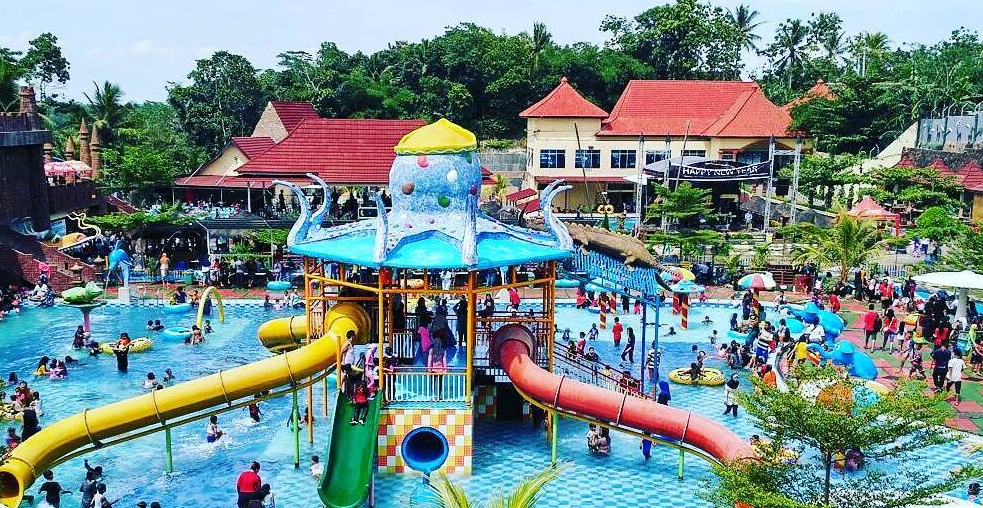

Slanik Waterpark
Apakah kamu memiliki rencana berlibur ke Lampung? Kalau iya, waktu liburanmu tidak akan sia-sia karena di sana terdapat banyak tempat wisata yang layak kamu kunjungi, salah satunya adalah Slanik Waterpark Lampung.
Jika wisatawan daerah lain mungkin masih belum banyak yang mengenal waterpark ini, namun waterpark ini merupakan yang paling besar di daerah Lampung dan sangat terkenal di masyarakat lokalnya.

Slanik Waterpark memang masih terbilang cukup baru, karena baru dibuka pada 6 Februari 2016 lalu, tapi minat kunjungan dari masyarakat lokal sangat tinggi. Sehingga, dalam waktu cepat waterpark ini bisa menyaingi waterpark lainnya di Lampung. Tidak heran jika banyak pengunjung yang memilih tempat ini sebagai destinasi liburan di waktu weekend maupun liburan panjang.
Dengan hadirnya waterpark terbesar Lampung ini, para wisatawan dan masyarakat lokal tidak melulu ke kawasan pantai dan waterpark yang memang sudah ada sebelumnya. Ini menjadikannya sebagai tempat wisata air lainnya yang bisa kamu kunjungi. Lalu, ada apa saja sih di waterpark ini? Mari simak selengkapnya di artikel berikut.
Pastinya di sana memiliki banyak ragam wahana air yang bisa dinikmati oleh semua kalangan, baik anak-anak dan orang dewasa.
Untuk anak-anak, wahana air Octopus Kids Fun bisa menjadi tempat bermain yang menyenangkan untuk mereka. Wahana ini berbentuk kolam renang yang memiliki kedalaman kurang dari 1 m. Untuk melengkapi kesenangan anak-anak, wahana tersebut dilengkapi dengan ember tumpah, waterfall, dan seluncuran anak-anak.
Untuk orang dewasa, kamu bisa mencoba wahana Fast 2 Furious. Dengan memiliki nama yang sama seperti judul film mengenai balap mobil, wahana ini juga membuatmu merasa seperti sedang balap mobil karena kecepatan turunnya yang cepat. Tingginya bahkan sekitar 24 sampai 26 m yang tentunya kalau sudah berseluncur akan sangat cepat. Tapi, jangan lupa, kamu wajib menggunakan ban karena wahana ini memang dikhususkan bagi pengguna ban saja. Karena cukup berbahaya, anak-anak dilarang menggunakan wahana ini untuk menghindari hal yang tidak diinginkan.